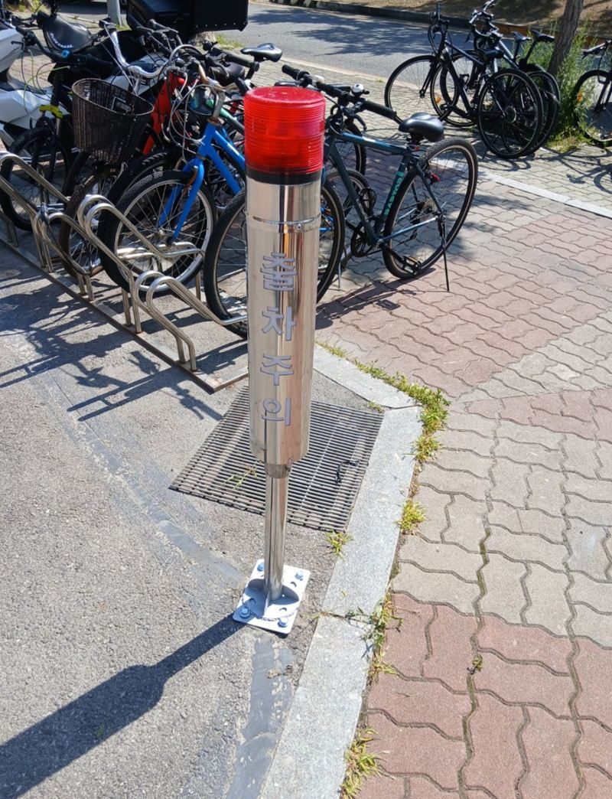
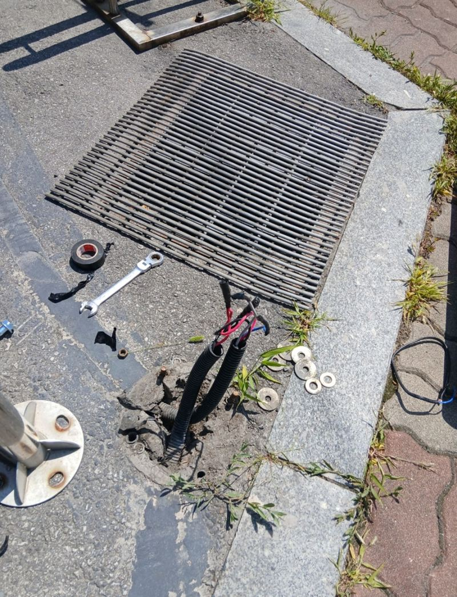
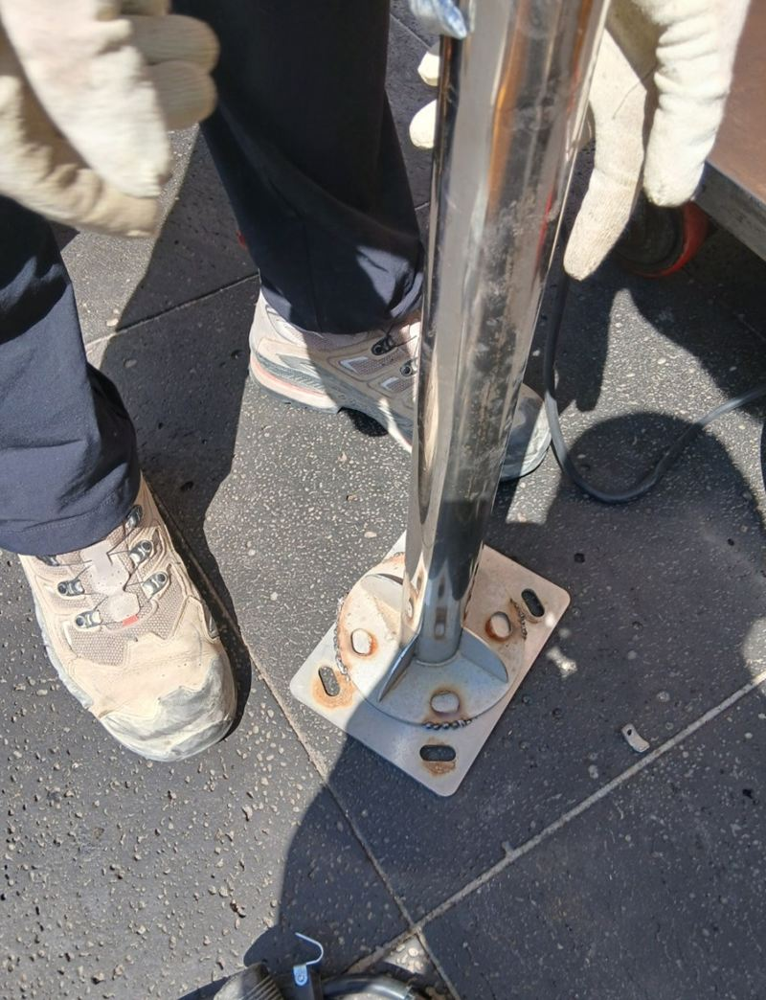
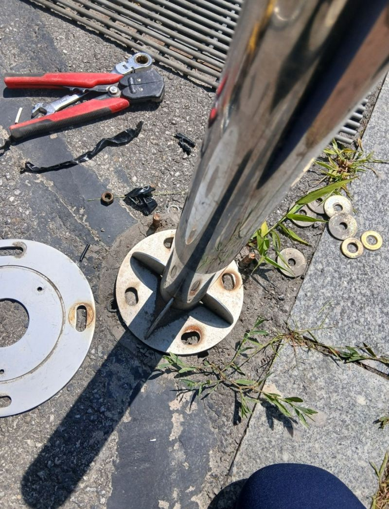
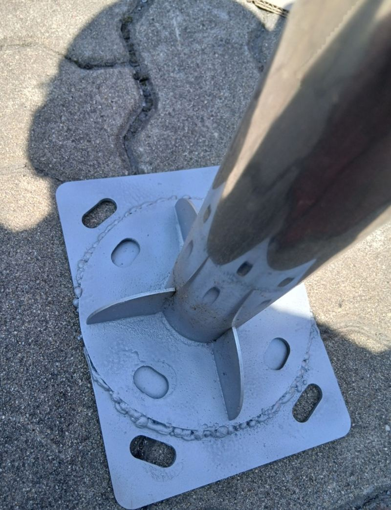
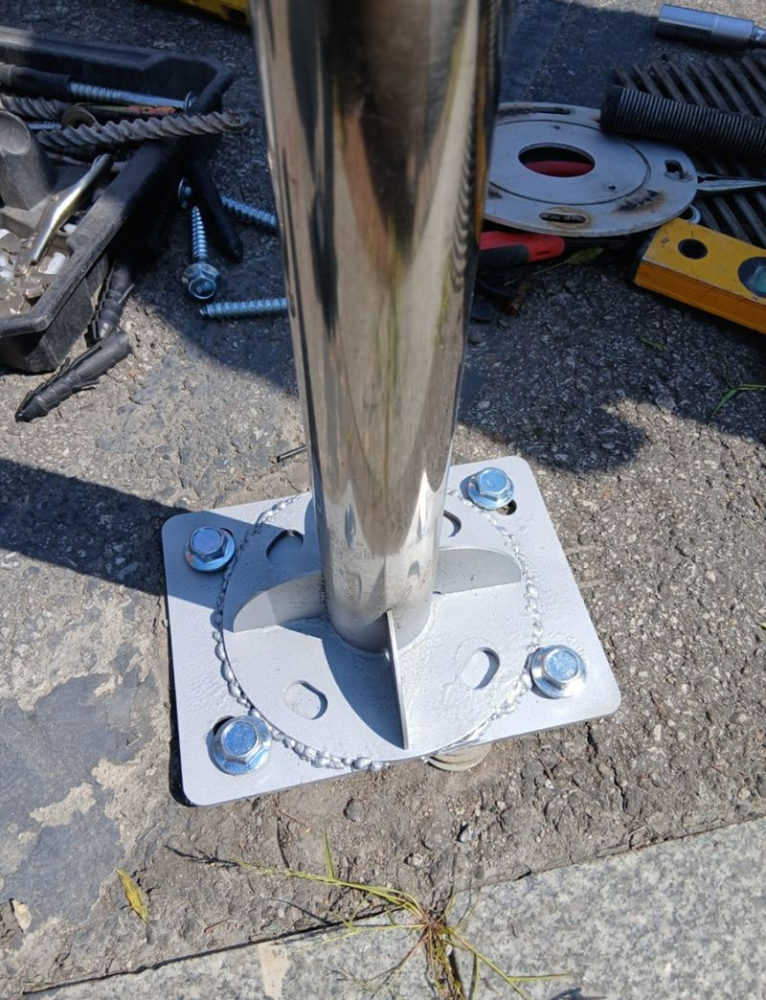

잠실 드라이브스루 출차등 수리 방법과 점검


수리 전수리 후← 밀어서 전후 비교 →
"출차주의등이 또 부서졌어요. 예전에 고쳐 주실 때 남은 부품을 보관해 뒀는데, 그걸로 이번에도 될까요? 비용은 최대한 줄이고 싶어요." 잠실 드라이브스루 매장 관계자분의 연락이었어요. 차가 쉴 새 없이 드나드는 출차구라, 기둥형 출차등이 받히는 일이 반복되는 자리였어요. 보관 부품부터 확인했지만 이번엔 손상이 커서 신품으로 바꾸고, 기둥 하부 구조가 달라 용접으로 단단히 보강한 뒤 수평을 맞춰 세웠어요.
| 현장 | 서울 송파구 잠실 드라이브스루 매장 출차구 |
|---|---|
| 증상 | 출차주의등 기둥이 차에 받혀 넘어지고 등기구 파손, 반복 발생 |
| 한 일 | 보관 부품 재사용 가능 여부 확인 → 파손품 분해(하부 배선 보호) → 하부 구조 차이 확인 → 용접 보강 → 수평 맞춰 신품 장착 → 배선 연결·점등 확인 |
| 시간대 | 매장 이용이 적은 시간에 진행 |
자꾸 부서지는 자리라면
드라이브스루 출차구는 차가 좁은 곡선을 돌아 나오는 자리라, 바퀴나 범퍼에 출차등 기둥이 받히기 쉬워요. 한 번 고친 뒤에도 같은 일이 되풀이되는 경우가 많아요. 그래서 이번엔 부품을 바꾸는 데서 그치지 않고, 다음 충격에도 덜 흔들리도록 하부 고정을 더 튼튼하게 하는 데 초점을 뒀어요.
비용을 줄이려고 지난번 수리 때 남겨 둔 부품부터 살폈어요. 상태가 괜찮으면 그걸 쓰는 게 가장 경제적이에요. 하지만 이번 파손품은 겉면 손상이 심해 다시 쓰기 어려웠고, 결국 신품으로 바꾸기로 했어요.


하부가 다른 새 출차등 세우기
조심스럽게 분해
바닥 아래로 이어진 배선을 건드리지 않게, 고정 나사와 프레임을 하나씩 풀었어요.


용접 보강
신품 등기구와 기존 기둥 하부 모양이 달라 그냥 끼울 수 없었어요. 밖에서 충격을 받는 시설이라 볼트만으로는 약해서, 받침에 용접으로 덧대 단단히 붙였어요. 열에 휘지 않게 천천히 고르게 용접했어요.


장착과 점등
용접부가 식은 뒤 배선 위치와 고정 상태를 다시 보고, 수평계로 기둥이 곧게 섰는지 맞춰 신품을 달았어요. 마지막으로 불이 제대로 들어오는지 확인했어요.
교체 후 점검 포인트
- 흔들림손으로 밀어 기둥이 받침과 따로 놀지 않는지 봐요.
- 점등낮에도 불빛이 잘 보이는지, 깜빡임 주기가 일정한지 확인해요.
- 배선바닥에서 올라오는 선이 눌리거나 벗겨지지 않았는지 봐요.
- 보이는 방향출차하는 운전자와 보행자 모두 불빛을 볼 수 있는 방향인지 맞춰요.
매장 쪽에서는 "자주 부서져 걱정이 많았는데 지난 수리 이력까지 기억해 주고, 비용 부담을 먼저 챙겨 줘서 믿음이 갔다, 일직선으로 반듯하게 선 걸 보니 맡기길 잘했다"고 하셨어요.
영업 중인 매장 작업은 이렇게
드라이브스루는 차가 끊이지 않아서 작업 시간이 중요해요. 이용이 적은 시간대를 골라 출차구 한쪽만 막고 진행했어요. 매장 운영을 크게 멈추지 않고 끝낼 수 있게, 준비할 부품과 공구는 미리 챙겨 갔어요.
또 부서질 일을 줄이려면 출차등 앞에 작은 볼라드나 카스토퍼를 함께 두는 방법도 있어요. 차가 기둥에 바로 닿기 전에 한 번 막아 주는 역할을 해요.
출차주의등 수리 질문
예전 부품을 보관해 두면 도움이 되나요?
네, 상태가 좋으면 다음 수리 때 그대로 써서 비용을 줄일 수 있어요.
등기구만 바꿀 수 있나요?
기둥과 받침이 멀쩡하면 등기구만 바꿔요. 받침이 휘었으면 함께 손봐요.
용접 없이도 고정되나요?
규격이 맞으면 볼트로 충분해요. 이 현장은 하부 모양이 달라 용접이 필요했어요.
불은 들어오는데 소리가 안 나요.
경보음 장치나 배선 문제일 수 있어 부품을 따로 확인해요.
프랜차이즈 매장도 하나요?
매장 외부 시설은 브랜드와 상관없이 맡아요. 관리 담당자와 일정을 맞춰요.
야간에 작업할 수 있나요?
영업 일정에 따라 상의해요. 조명이 필요한 작업은 미리 준비해요.
다른 반사경·출차등 현장
부서진 출차등과 받침, 출차구 전체를 찍어 보내 주세요.
전화 상담 010-4517-9872